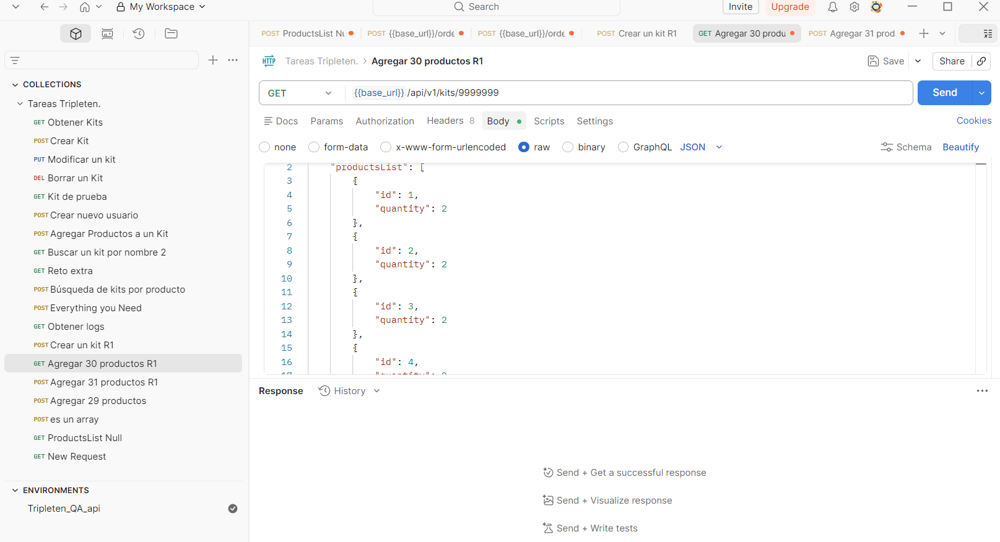

QA Engineer Junior en formación, construyendo un perfil que combina pensamiento analítico y enfoque en el usuario. Vengo del marketing digital, donde desarrollé atención al detalle, comunicación efectiva y adaptabilidad, habilidades que hoy aplico al testing de software. Tengo experiencia en testing manual web y móvil, API testing con Postman y validación de datos con SQL, además de diseño de test cases y reporte de bugs.
🎯 Busco mi primera oportunidad como QA Tester para aportar a la calidad del software y seguir creciendo en el área.Contexto: Proyecto enfocado en la validación de endpoints para la gestión de kits y servicios de entrega en una plataforma de compras.
Análisis: Diseñé y ejecuté más de 30 test cases utilizando Postman, incluyendo escenarios positivos, negativos y edge cases. Validé requests y responses de APIs REST, analizando estructuras JSON y comportamientos del sistema.
Resultados: Identifiqué errores en códigos HTTP (400, 404, 500), fallos en validaciones y problemas en la lógica de negocio. Documenté los bugs en Jira de forma clara y estructurada, asegurando su seguimiento y contribuyendo a mejorar la calidad del sistema.
Tecnologías: API Testing · Postman · JSON · Jira · Test Case Design.

Contexto: Proyecto enfocado en la validación del flujo completo de reserva de vehículos en una plataforma web, asegurando su correcto funcionamiento en diferentes navegadores.
Análisis: Diseñé y ejecuté casos de prueba funcionales en Chrome y Firefox, validando formularios críticos como métodos de pago y códigos de seguridad. Realicé pruebas de UI para evaluar la interacción, el diseño y la experiencia del usuario en distintos escenarios.
Resultados: Identifiqué errores en validaciones, fallos en la interacción del usuario y problemas en el flujo de reserva. Documenté bugs en Jira con pasos de reproducción, severidad y detalle técnico, contribuyendo a mejorar la estabilidad del sistema antes de su liberación.
Tecnologías: Functional Testing · UI Testing · Cross-Browser Testing · Jira · Test Case Design.